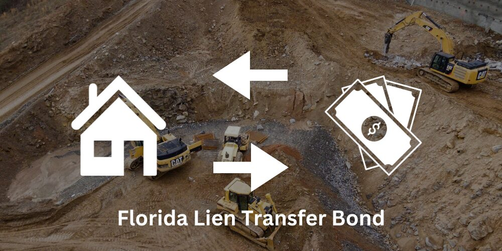

How to Transfer a Lien to a Bond in Florida

Florida construction liens provide contractors with a powerful tool in order to obtain delinquent payments from their customers. Recording a lien puts property owners in a precarious position, with several significant consequences:
- The lien creates a threat of foreclosure;
- The lien may cause a default under the owner's mortgage/note;
- The lien can prevent a sale of the property by clouding its title; and
- The lien may result in an award of attorneys fees if a case is pursued.
However, Florida law also provides a powerful tool for owners who need to quickly remove construction liens from their property. This is informally referred to as "bonding off a lien".
When bonding off a lien, the owner substitutes a cash deposit or bond as a security in exchange for the real property. For this process, the paper asset is used to secure the contractors right to payment, while the property escapes from the cloud on its title.
Section 713.24 of the Florida Statutes provides the mechanism for bonding off a lien. This section states that any person with an interest in the property can transfer the lien by depositing cash or filing a bond with the county clerk's office. Whether using cash or a bond, the amount must be equal to:
- the amount claimed in the lien,
- plus interest thereon at the legal rate for 3 years,
- plus $5,000 or 25 percent of the amount demanded in the claim of lien, whichever is greater (to apply on any attorney fees and court costs that may be taxed in any proceeding to enforce said lien).
In practical terms, property owners who wish to bond off a lien should usually visit the Civil Division of the County Clerk's office, at the courthouse, in person. An appointment is sometimes necessary, so make sure to call ahead and confirm the time of your visit. When scheduling your visit, inform the clerk that you will be seeking a "Clerk's Certificate of Transfer of Lien". Orange County provides instruction online, but you should still consult with your local Clerk's office.
Property owners wishing to bond off the lien with "cash" will bring two cashier's checks. One check is used to pay the amount of the security, as calculated using the formula above. The second is used to pay the registry fees associated with recording the Clerk's Certificate of Transfer of Lien. You should confirm these amounts with the Clerk's office by telephone in advance of your visit.
It is also recommended to bring two copies of the lien for the visit, identification, and evidence of your interest in the property (ex: a deed or lease). During your visit with the clerk's office, pay the fees, work with the clerk to complete the Certificate of Transfer, and verify that the clerk will record the Certificate in the public records on your behalf.
Owners wishing to transfer the lien to a bond (instead of cash) will need to obtain a Lien-Transfer Bond before making their visit, and take a copy of the bond to the Clerk during their visit. Various sureties are available who are willing to underwrite lien transfer bonds in exchange for a premium payment.
Upon filing the Certificate of Transfer, the real property is released from the lien, and the lien is transferred to the security. However, an interested lienor can still file a complaint in chancery or motion in a pending action to require additional security, which might result in the court requiring a larger deposit or bond amount.
DISCLAIMER: The information provided on this website does not, and is not intended to, constitute legal advice; instead, all information, content, and materials available on this site are for general informational purposes only.